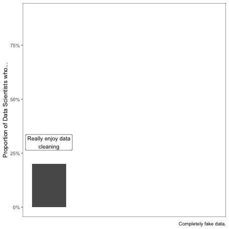

Upgrading to R #3: Be the Data Engineer you Need
Be the data engineer of your dreams.
When I first went to data conferences, I assumed that EVERYONE else was pulling data from a supercomputer-backed Spark cluster, immaculately maintained by an army of data engineers. Needless to say, that was not my data infrastructure.
To be more succinct, most of the “data infrastructure” I’ve worked with has just been csv files. And our ETL processes – cleaning csv files to output more csv files (or rds).
Based on my very informal polling of people in the field, this is WAY more common than anyone admits, especially if you’re on a team that’s just upgrading to R. As you make that switch, it’s easy to be discouraged feeling like everyone else is lightyears ahead. The (not so) dirty secret is that they’re not really.
If I had to guess, the modal data scientist/analyst working in industry does ETL across a mixture of flat files and SQL databases. It’s still relatively rare to find people working on higher-power systems.1
Coming into a new role and discovering that you’re expected to wrangle a bunch of csv files can be frustrating, especially if you don’t reall ywant to be a data engineer. But you should. The number one way to be a better data scientist is to become the data engineer you wish you had.
Being a great junior data scientist is 75% just knowing the data super well. A junior data scientist who can confidently identify things that just look weird in data is worth approximately 47 XGBoost models and 76 convolutional neural nets.
A data scientist who combines data science knowledge with expertise on the data’s provenance and the data-generating process is way more likely to make a good catch or identify a clever new feature for modeling than a better modeler with little understanding of the specifics of the data.
So yes, become the data engineer for your data because you need it, but also to make yourself a better data scientist. It won’t kill you.
Best Practices for ETL on Flat Files
Since I’ve done and managed a lot of ETL involving flat files, here are some tips I’d suggest:
- Use git to manage your code, and git LFS for managing data. Git will choke and die on data files larger than 50Mb or so, but aside from some annoyingly long download and upload times, git LFS has been a good tool for sharing data up to a few Gb across my team.
- Store all data in a
datafolder, with input data separated from cleaned data. - If feasible, create standardized cleaning functions (in a package!) so that variable names are the same across different projects.
- Consider creating a data access API in R so you call a function to access data instead of loading a
csvfile.2 The advantage is that it abstracts away from exactly how you store the data, so you can get used to loading your data in a simple way, and you can always update the backend to a SQL server or something else without changing the way you access your data.